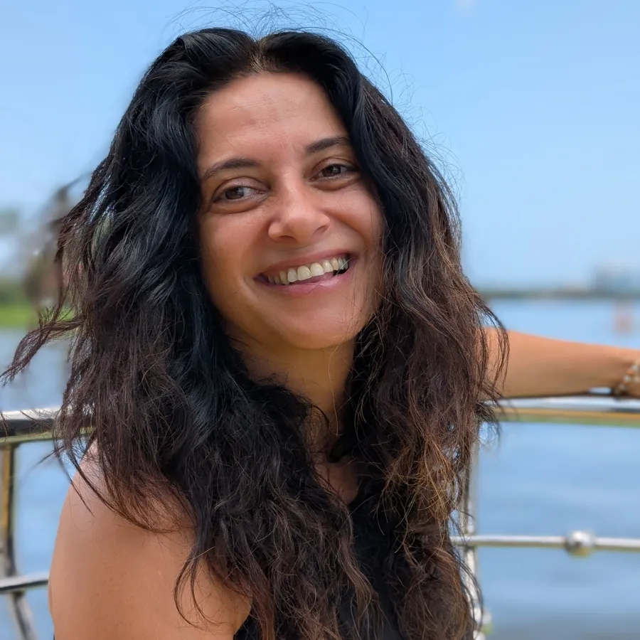

טל אמיתי-לביא
מרצה ומנחת סדנאות ותיקה, פרדס חנה
את הביודנסה פגשתי אחרי ניסיון רב שנים של עבודת גוף-נפש, מתוך רצון להמשיך להתפתח ולשפר את איכות חיי דרך עולמות התנועה והביטוי הרגשי. אפשר לומר שזו הייתה אהבה ממבט ראשון.
נרשמתי ללימודים בבית הספר לביודנסה כי רציתי להבין את הקסם של השיטה: להבין איך ברגע אחד השיפוטיות והביקורת נעלמות, והלב מתמלא באהבה. בביודנסה מצאתי ביטוי פיזי ורגשי, עיניים טובות, ריפוי לחלקים הפצועים שבי, וקהילה תומכת שמספקת שמחה והנאה ומושיטה יד גם בעיתות משבר.
אני מביאה איתי ניסיון עשיר בהנחיית סדנאות ובהובלת תהליכי עומק, ארגז כלים עשיר, אהבת אדם ואמונה עמוקה שתנועה מביאה לתנועה בחיים. כל מה שנותר לנו זה רק לבוא ולהתמסר לתהליך.
לעמוד של טל